Công cụ định vị AI chủ yếu được dùng để định vị mục tiêu trong ảnh. Trong quá trình định vị, phương pháp định vị truyền thống gặp điểm nghẽn, các yếu tố như vật liệu ảnh, độ tương phản, nhiễu, v.v. làm cho độ ổn định chưa đủ, đồng thời ngưỡng kỹ năng tinh chỉnh tham số của thuật toán truyền thống khá cao. Để giải quyết vấn đề này, công cụ định vị AI định vị mục tiêu dựa trên deep learning, nâng cao độ ổn định định vị, đồng thời phát triển chức năng huấn luyện độ chính xác cao, thực hiện định vị AI + định vị truyền thống, vừa đảm bảo độ ổn định định vị, vừa nâng cao độ chính xác định vị, đồng thời thực hiện thiết lập tham số tự động.
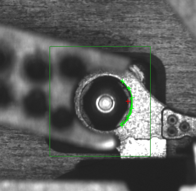
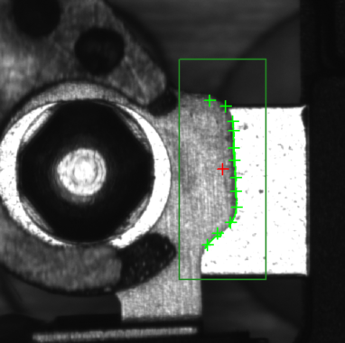
Quá trình thực thi định vị AI có thể chia thành hai chế độ:（1）Chỉ dùng mô hình AI để định vị；（2）AI + định vị hình học。
Sau khi huấn luyện, thông thường sẽ tạo ra hai tệp .model và .xml, trong đó tệp .model là mô hình AI, .xml là mô hình huấn luyện độ chính xác cao và tham số tìm kiếm. Khi chỉ tải .model, chỉ dùng mô hình AI để định vị；khi dùng cả .model và .xml, là AI + định vị hình học。
（1）Trong trường hợp chỉ định vị AI, có thể xuất các điểm đặc trưng và tập điểm biên của mục tiêu；
（2）Trong trường hợp AI + định vị hình học：có thể xuất các điểm đặc trưng, tập điểm biên của mục tiêu, cũng như phép tịnh tiến, xoay và co giãn so với ảnh chuẩn；
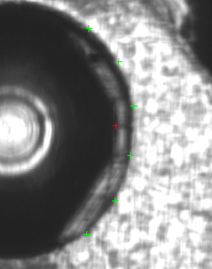
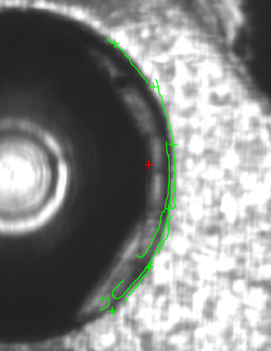
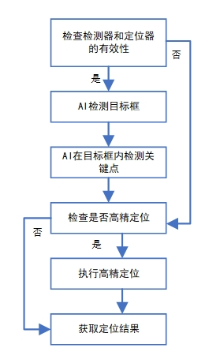
Công cụ định vị AI có thể thực hiện định vị ổn định trong các cảnh có hiệu quả tạo ảnh không nhất quán như thay đổi độ tương phản, thay đổi tiền cảnh và hậu cảnh, hỗ trợ triển khai mô hình AI trên CPU để suy luận, có thể sử dụng trên máy tính công nghiệp thông thường, không cần bổ sung card đồ họa hiệu năng cao, tương thích với các cảnh định vị như sản phẩm biến dạng nhẹ, đảo cực tính, v.v.
Công cụ định vị AI có các đặc tính như khả năng thích ứng cao, độ robust cao, khả năng huấn luyện và suy luận hiệu quả, định vị độ chính xác cao và tiêu hao tài nguyên thấp, khi đối mặt với môi trường tạo ảnh phức tạp và biến đổi, sẽ nâng cao đáng kể hiệu suất và độ chính xác định vị trong các lĩnh vực ứng dụng liên quan.
Quy trình thực thi công cụ：thêm công cụ→cấu hình đầu vào（bao gồm mô hình AI）→thiết lập thuộc tính→huấn luyện ảnh→thực thi tìm kiếm→hiển thị kết quả và cung cấp cho công cụ khác sử dụng。
Cách 1, có thể nhấp chuột phải vào sơ đồ quy trình-》“Tạo mới”-》“Công cụ định vị”-》“Công cụ định vị AI”
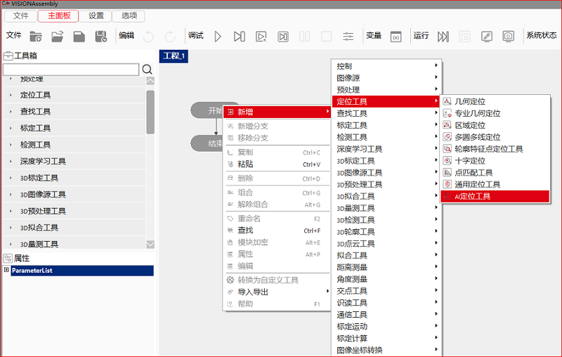
Cách 2，“Bảng điều khiển chính”-》“Hộp công cụ”-》“Công cụ định vị”-》“Công cụ định vị AI”
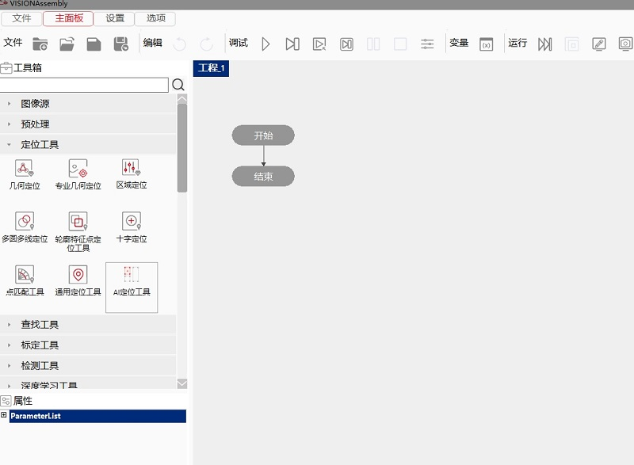
Nhấp đúp vào công cụ, trong cửa sổ bật lên cấu hình ảnh đầu vào và cấu hình đường dẫn mô hình
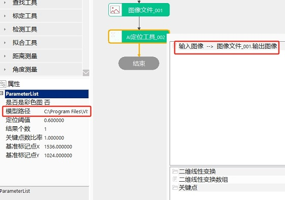
Cách 1，“Trang chính”-》cửa sổ “Thuộc tính”
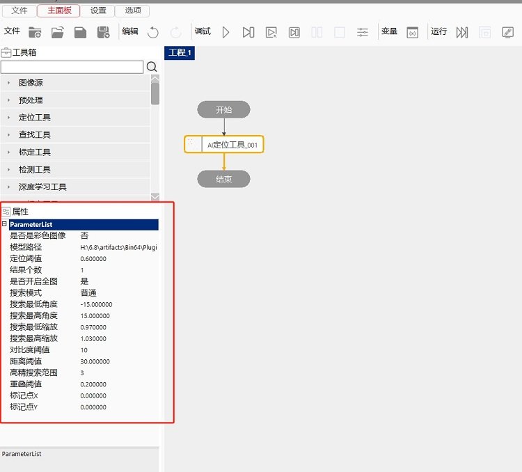
Cách 2，trên “Công cụ định vị AI” “nhấp chuột phải”-》chọn “Thuộc tính”
Nhấp chuột phải vào công cụ→Thuộc tính→mở giao diện nâng cao→tham số huấn luyện
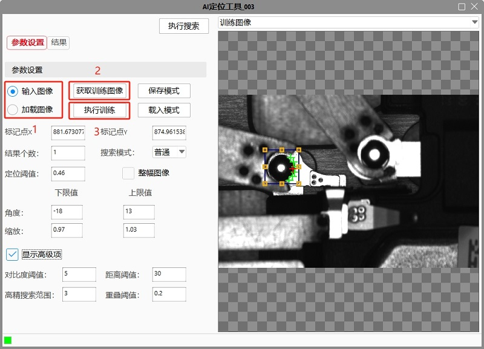
（1）Trước tiên chọn nguồn “ảnh huấn luyện”：
a.“Ảnh đầu vào"：ảnh huấn luyện được lấy từ “Ảnh đầu vào” trong chuỗi tham số；
b.“Tải ảnh"：ảnh huấn luyện được lấy từ tệp bằng phương thức tải ngoại tuyến；
（2）Nhấp “Lấy ảnh huấn luyện”：cập nhật ảnh huấn luyện, sau khi nhấp sẽ xuất hiện hộp nhắc trước；
（3）Nhấp “Thực thi huấn luyện”：tiến hành huấn luyện；
Trả về kết quả tìm kiếm tương ứng theo tham số tìm kiếm đã thiết lập
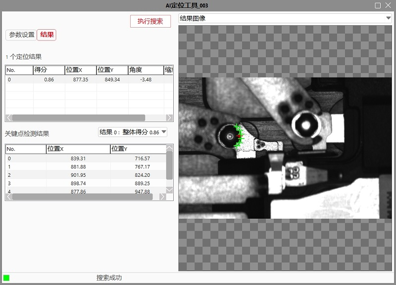
Nhấp đúp vào công cụ phía sau, ví dụ “Công cụ tìm đường thẳng004” bên dưới, trong trang kết nối tham số, chọn “Biến đổi tuyến tính 2D”, trong các kết nối có thể chọn ở bên phải, nhấp đúp “Công cụ định vị AI003.Biến đổi tuyến tính 2D”, hoàn tất kết nối.
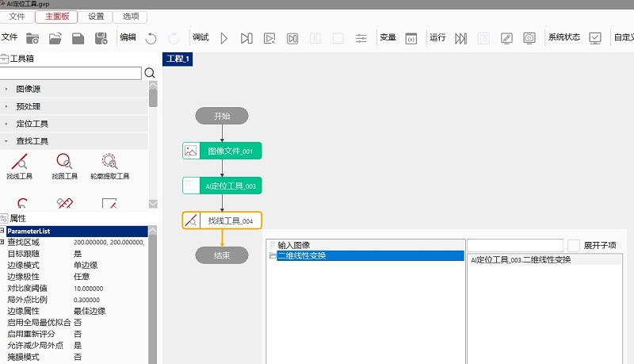
Kéo “AI定位工具_003” vào giao diện View（cần thêm trước）, tích chọn nội dung cần chọn, thông thường chọn “Ảnh đầu vào” và “Điểm đặc trưng” là có thể hiển thị nhanh.
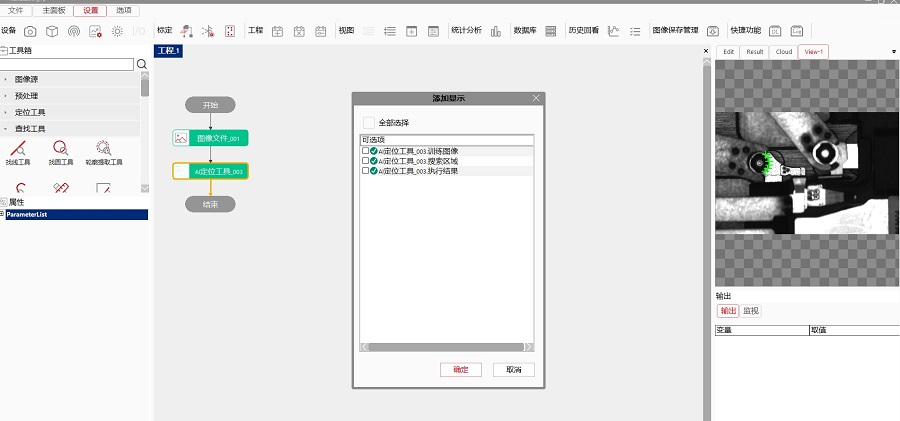
（1）Định vị bằng mô hình AI
Trong các bước trên, khi thiếu thao tác “huấn luyện ảnh”, đó là định vị bằng mô hình AI, kết quả tìm kiếm chỉ có “kết quả phát hiện điểm đặc trưng” trong “thực thi tìm kiếm” Hình 10.
（2）AI + định vị hình học
Trong các bước trên, khi thực hiện đầy đủ thao tác, đó là chế độ AI + định vị hình học, kết quả tìm kiếm như Hình 10, có “kết quả định vị” và “kết quả phát hiện điểm đặc trưng”.
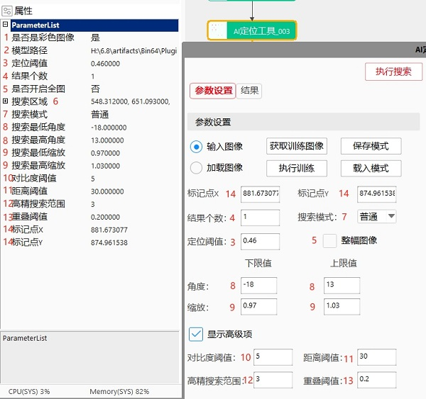
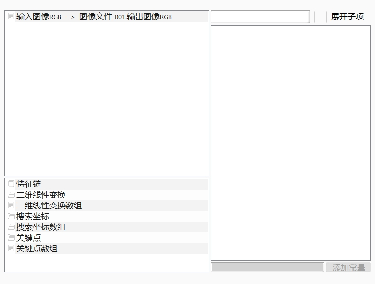
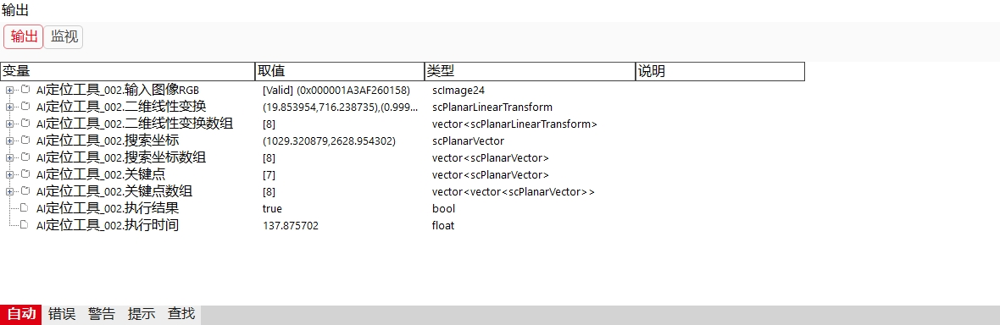
| No | Tên tham số | Kiểu tham số | Mô tả tham số | Phương thức thiết lập | Giá trị thường dùng |
|---|---|---|---|---|---|
| 1 | Có phải ảnh màu | bool | Ảnh đầu vào có phải là ảnh màu hay không, chọn có thì trong chuỗi tham số hiển thị ảnh đầu vào RGB；chọn không thì trong chuỗi tham số hiển thị ảnh đầu vào. | Chọn từ danh sách thả xuống | Không |
| 2 | Đường dẫn mô hình | string | Công cụ định vị AI hỗ trợ tải mô hình, để lựa chọn mô hình huấn luyện khác nhau theo các cảnh kiểm tra khác nhau. | Nhập giá trị, biểu thức, script | NA |
| 3 | Ngưỡng định vị | double | Có một điểm số mức độ khớp giữa template huấn luyện và kết quả tìm kiếm thời gian thực, khi điểm khớp cao hơn ngưỡng định vị thì biểu thị tìm kiếm thời gian thực thành công, phạm vi giá trị là (0，1]. | Nhập giá trị, biểu thức, script | 0.6 |
| 4 | Số lượng kết quả | int | Thiết lập số lượng kết quả tìm kiếm tối đa, phạm vi（0，50]. | Nhập giá trị, biểu thức, script | 1 |
| 5 | Có bật toàn ảnh | bool | Công tắc bật tìm kiếm toàn ảnh. Khi chọn “Có”, toàn bộ ảnh được thu nhận thời gian thực đều là phạm vi tìm kiếm của công cụ này；khi chọn “Không”, hình chữ nhật affine “vùng tìm kiếm” trong Edit view là phạm vi tìm kiếm của công cụ này. | Chọn từ danh sách thả xuống, biểu thức, script | Không |
| 6 | Vùng tìm kiếm | scRectangular | Khi “Có bật toàn ảnh” chọn “Không”, hình chữ nhật affine “vùng tìm kiếm” là phạm vi tìm kiếm của công cụ này. | Nhập giá trị, script | NA |
| 7 | Chế độ tìm kiếm | eVW_SearchMode | Chia thành “thông thường” và “độ chính xác cao”；thông thường là định vị chỉ dựa trên mô hình AI, độ chính xác cao là chế độ AI + định vị hình học, hoặc không có mô hình AI, định vị hình học thuần túy | Chọn từ danh sách thả xuống | Thông thường |
| 8 | Góc tìm kiếm cao nhất/thấp nhất | double | Phạm vi góc tìm kiếm, góc thấp nhất>=-360°, góc cao nhất<=360°, góc thấp nhất<=góc cao nhất. | Nhập giá trị, biểu thức, script | 15/-15 |
| 9 | Tỷ lệ co giãn tìm kiếm cao nhất/thấp nhất | double | Phạm vi co giãn khi tìm kiếm, co giãn thấp nhất>0, góc cao nhất<=10°, co giãn thấp nhất<=co giãn cao nhất. | Nhập giá trị, biểu thức, script | 1.03/0.97 |
| 10 | Ngưỡng độ tương phản | int | Độ tương phản được định nghĩa là giá trị trung bình của biên độ tất cả điểm biên trong pattern. Người dùng có thể xóa các pattern có độ tương phản thấp bằng cách thiết lập ngưỡng độ tương phản. Phạm vi giá trị [1,255], hỗ trợ số thập phân. | Nhập giá trị, biểu thức, script | 10 |
| 11 | Ngưỡng khoảng cách | double | Dựa trên kết quả định vị hiện tại, biến đổi các điểm đặc trưng thu được từ định vị ảnh chuẩn sang ảnh hiện tại, lấy khoảng cách trung bình giữa hai tập điểm. Phạm vi giá trị（0,10000]. | Nhập giá trị, biểu thức, script | 30 |
| 12 | Phạm vi tìm kiếm độ chính xác cao | int | Dựa trên kết quả định vị AI, trong phạm vi tìm kiếm độ chính xác cao đã thiết lập, sử dụng định vị hình học để tìm kiếm lại. Phạm vi giá trị [1,25]. | Nhập giá trị, biểu thức, script | 3 |
| 13 | Ngưỡng chồng lấp | double | Mức độ chồng lấp của hai mục tiêu. Phạm vi giá trị [0,1]. | Nhập giá trị, biểu thức, script | 0.2 |
| 14 | Điểm đánh dấu X/Y | double | Nhập thủ công tọa độ trục X, trục Y của điểm đánh dấu. | Nhập giá trị, biểu thức, script | 0/0 |
| Tham số đầu vào | Kiểu đầu vào | Mô tả tham số | Loại công cụ đầu vào | Đơn vị |
|---|---|---|---|---|
| Ảnh đầu vào | scImage8 | Ảnh đầu vào dùng để nhận dạng thời gian thực, ảnh xám. | Nguồn ảnh | NA |
| Ảnh đầu vào RGB | scImage24 | Ảnh đầu vào dùng để nhận dạng thời gian thực, ảnh màu. | Nguồn ảnh | NA |
| Tham số đầu ra | Kiểu đầu ra | Mô tả tham số | Công cụ có thể kết nối phía sau | Đơn vị |
|---|---|---|---|---|
| Biến đổi tuyến tính 2D | scPlanarLinearTransform | Biến đổi tuyến tính 2D do công cụ này xuất ra là nhóm giá trị đầu tiên trong mảng biến đổi tuyến tính 2D của công cụ này. | Tìm kiếm/kiểm tra/màu sắc/đọc nhận dạng/script | NA |
| Mảng biến đổi tuyến tính 2D | vector | Biến đổi tuyến tính 2D là phép tịnh tiến, xoay, co giãn của mục tiêu so với template. Mảng biến đổi tuyến tính 2D là mảng gồm tất cả biến đổi tuyến tính 2D được tạo ra sau một lần công cụ này thực thi xong. | Script | NA |
| Tọa độ tìm kiếm | scPlanarVector | Kết quả định vị đầu tiên. | Script | NA |
| Mảng tọa độ tìm kiếm | vector | Tất cả kết quả định vị. | Script | NA |
| Điểm đặc trưng | vector | Tập điểm của mục tiêu định vị đầu tiên. | Script | NA |
| Mảng điểm đặc trưng | vector | Tập điểm của tất cả mục tiêu định vị. | Script | NA |
| Tham số đầu ra | Kiểu đầu ra | Mô tả tham số | Đơn vị |
|---|---|---|---|
| Ảnh đầu vào | scImage8 | Chiều rộng, chiều cao, kích thước pixel của ảnh đầu vào. | NA |
| Ảnh đầu vào RGB | scImage24 | Chiều rộng, chiều cao, kích thước pixel của ảnh màu đầu vào. | NA |
| Biến đổi tuyến tính 2D | scPlanarLinearTransform | Biến đổi tuyến tính 2D do công cụ này xuất ra là nhóm giá trị đầu tiên trong mảng biến đổi tuyến tính 2D của công cụ này. | NA |
| Mảng biến đổi tuyến tính 2D | vector | Biến đổi tuyến tính 2D là phép tịnh tiến, xoay, co giãn của mục tiêu so với template. Mảng biến đổi tuyến tính 2D là mảng gồm tất cả biến đổi tuyến tính 2D được tạo ra sau một lần công cụ này thực thi xong. | NA |
| Tọa độ tìm kiếm | scPlanarVector | Kết quả định vị đầu tiên. | NA |
| Mảng tọa độ tìm kiếm | vector | Tất cả kết quả định vị. | NA |
| Điểm đặc trưng | vector | Tập điểm của mục tiêu định vị đầu tiên. | NA |
| Mảng điểm đặc trưng | vector | Tập điểm của tất cả mục tiêu định vị. | NA |
| Kết quả thực thi | bool | Kết quả thực thi công cụ. | NA |
| Thời gian thực thi | double | Thời gian thực thi công cụ. | ms |
| Mô tả hiện tượng | Phương pháp xử lý |
|---|---|
| Cách lấy nhiều kết quả định vị | Có thể dùng công cụ script để lấy một kết quả tìm kiếm nào đó trong mảng kết quả tìm kiếm của kết quả định vị AI |
| Cách lấy nhiều kết quả biến đổi tuyến tính 2D | Có thể dùng công cụ script để lấy nhiều kết quả biến đổi tuyến tính 2D. |
| Không huấn luyện hoặc huấn luyện thất bại nhưng có thể thực thi tìm kiếm thành công | Tải mô hình, không huấn luyện, có thể tìm kiếm thành công, nhưng trong danh sách kết quả không có kết quả định vị. |
```python
A = GvTool.GetToolData(“AI定位工具003.二维线性变换”) B = GvTool.GetToolData(“AI定位工具003.二维线性变换数组”) C = GvTool.GetToolData(“AI定位工具003.关键点”) D = GvTool.GetToolData(“AI定位工具003.定位阈值”) E = GvTool.GetToolData(“AI定位工具003.对比度阈值”) F = GvTool.GetToolData(“AI定位工具003.执行时间”) G = GvTool.GetToolData(“AI定位工具003.执行结果”) H = GvTool.GetToolData(“AI定位工具003.搜索区域”) I = GvTool.GetToolData(“AI定位工具003.搜索最低缩放”) J = GvTool.GetToolData(“AI定位工具003.搜索最低角度”) K = GvTool.GetToolData(“AI定位工具003.搜索最高缩放”) L = GvTool.GetToolData(“AI定位工具003.搜索最高角度”) M = GvTool.GetToolData(“AI定位工具003.是否开启全图”) N = GvTool.GetToolData(“AI定位工具003.是否是彩色图像”) O = GvTool.GetToolData(“AI定位工具003.是否训练过”) P = GvTool.GetToolData(“AI定位工具003.标记点X”) Q = GvTool.GetToolData(“AI定位工具003.标记点Y”) R = GvTool.GetToolData(“AI定位工具003.结果个数”) S = GvTool.GetToolData(“AI定位工具003.训练图像”) T = GvTool.GetToolData(“AI定位工具003.距离阈值”) U = GvTool.GetToolData(“AI定位工具003.输入图像RGB”) V = GvTool.GetToolData(“AI定位工具003.重叠阈值”) W = GvTool.GetToolData(“AI定位工具003.高精搜索范围”) X = GvTool.GetToolData(“AI定位工具003.关键点数组”) Y = GvTool.GetToolData(“AI定位工具003.搜索坐标”) Z = GvTool.GetToolData(“AI定位工具003.搜索坐标数组”) print(A,B,C,D,E,F,G,H,I,J,K,L,M,N,O,P,Q,R,S,T,U,V,W,X,Y,Z)
GvTool.SetToolData(“AI定位工具003.定位阈值”,0.6) GvTool.SetToolData(“AI定位工具003.对比度阈值”,10) GvTool.SetToolData(“AI定位工具003.搜索区域”,H) GvTool.SetToolData(“AI定位工具003.搜索最低缩放”,0.97) GvTool.SetToolData(“AI定位工具003.搜索最低角度”,-15) GvTool.SetToolData(“AI定位工具003.搜索最高缩放”,1.03) GvTool.SetToolData(“AI定位工具003.搜索最高角度”,15) GvTool.SetToolData(“AI定位工具003.是否开启全图”,True) GvTool.SetToolData(“AI定位工具003.是否是彩色图像”,False) GvTool.SetToolData(“AI定位工具003.标记点X”,0.0) GvTool.SetToolData(“AI定位工具003.标记点Y”,0.0) GvTool.SetToolData(“AI定位工具003.结果个数”,1) GvTool.SetToolData(“AI定位工具003.距离阈值”,30) GvTool.SetToolData(“AI定位工具003.重叠阈值”,0.2) GvTool.SetToolData(“AI定位工具_003.高精搜索范围”,3) ```
参见“\Samples\AI定位工具.gvp”。